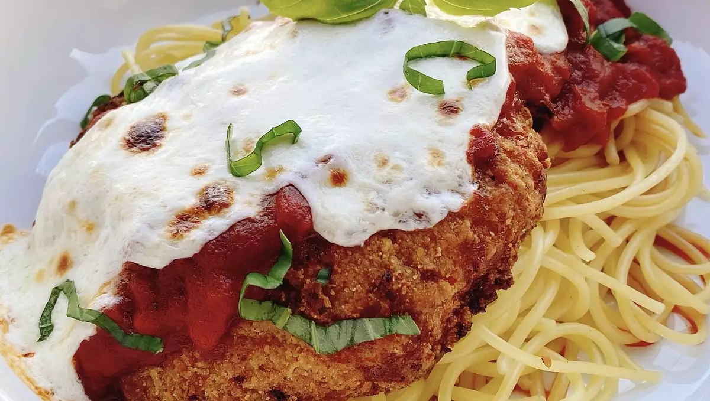

Air Fryer Chicken Parmesan

This is a delicous and simple way to make Chicken Parmesan.
Ingredients
1 8oz package of spaghetti
2 pre-cooked breaded chicken fillets
Steps:
Pre-heat air fryer to 400 degrees F (200 C) for 5 minutes.
Boil and salt a large pot of water.
Cook spaghetti until al dente.